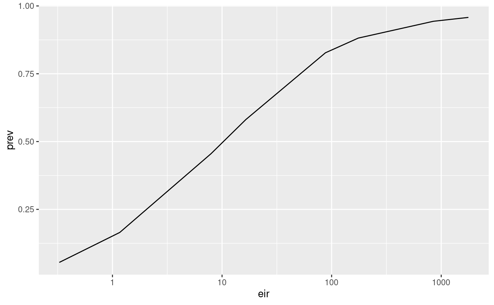
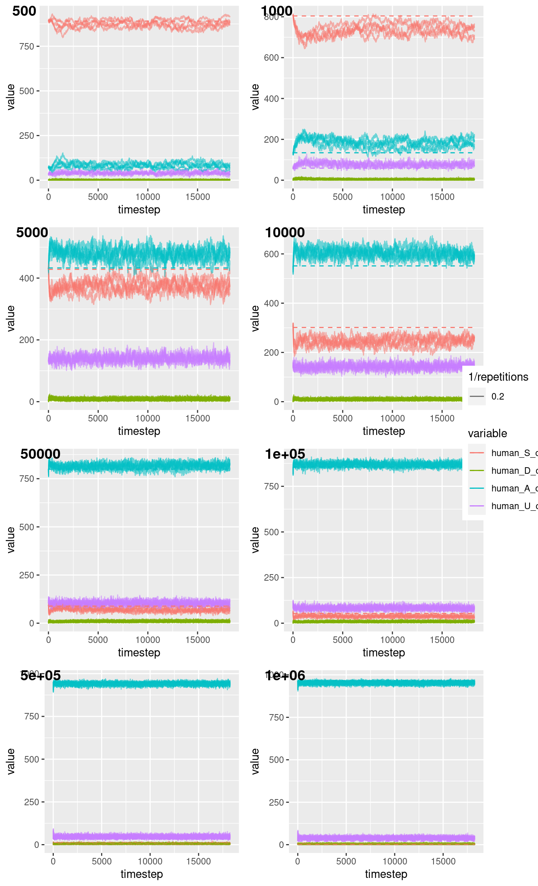
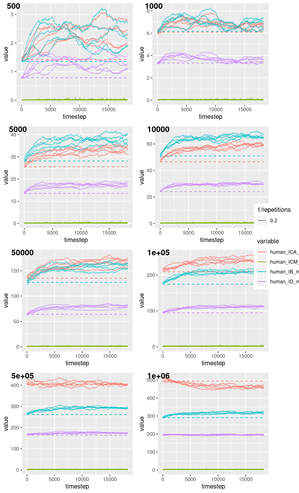
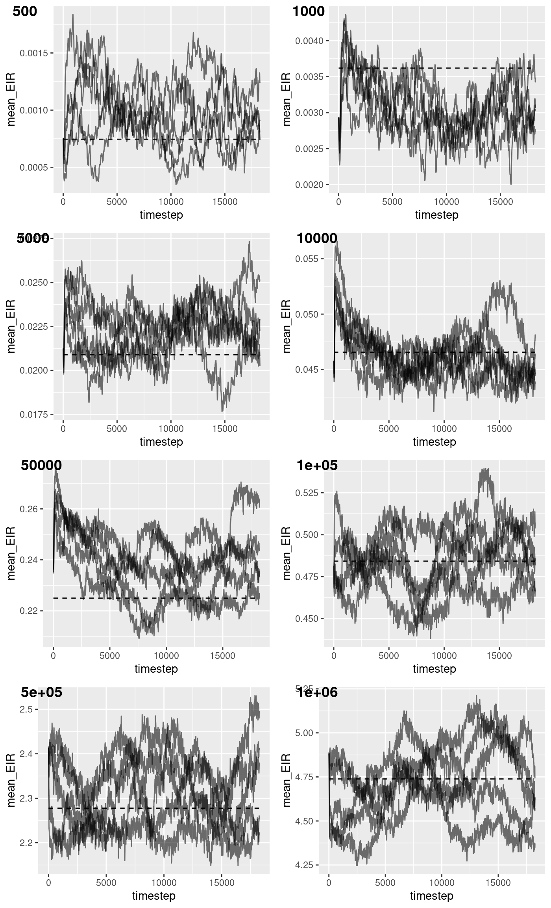
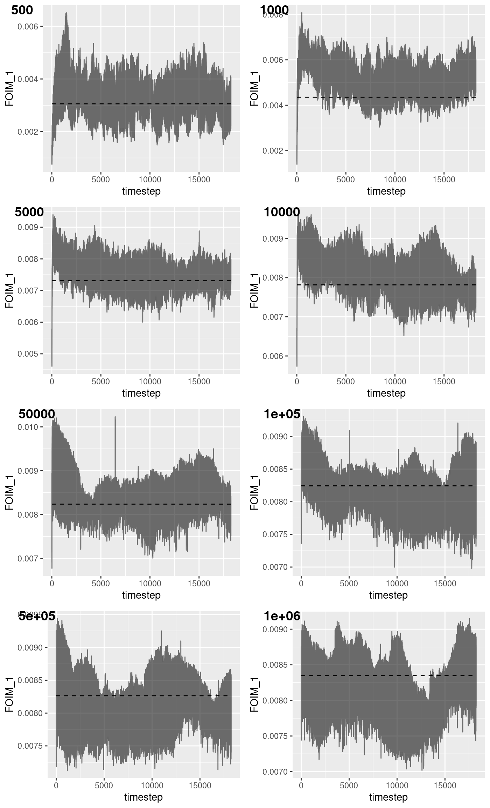

Validation.RmdsuppressPackageStartupMessages(library(ggplot2)) library(malariasimulation) library(malariaEquilibrium) library(reshape2) suppressPackageStartupMessages(library(cowplot))
This vignette demonstrates that the IBM is consistent with the equilibrium solution.
Let’s start by parameterising the model with the default parameters from the equilibirium solution code.
This involves:
year <- 365 sim_length <- 50 * year human_population <- 1000 repetitions <- 5 jamie_params <- load_parameter_set() simparams <- get_parameters(c( translate_jamie(remove_unused_jamie(jamie_params)), list( human_population = human_population, variety_proportions = 1, vector_ode = TRUE ) ))
Next we want to estimate the yearly EIR. This is an input parameter for the equilibrium solution, but for the IBM it’s an emergent statistic…
estimate_eir <- function() { output <- run_simulation(sim_length, simparams) sum(tail(output$mean_EIR, year)) }
We run our IBM model initialised with these state proportions to check for a divergence:
Let’s first set up some utility functions:
get_equilibrium <- function(EIR) { human_equilibrium(EIR = EIR, ft = 0, p = jamie_params, age = 0:99) } get_state_proportions <- function(eq) colSums(eq$states[,c('S', 'D', 'A', 'U')]) get_FOIM <- function(eq) eq$FOIM
And then run our models.
estimated_eirs <- c() outputs <- list() total_Ms <- c(.5, 1, 5, 10, 50, 100, 500, 1000) * human_population for (total_M in total_Ms) { simparams$total_M <- total_M EIR <- estimate_eir() if (EIR > 0) { total_Ms <- c(total_Ms, total_M) estimated_eirs <- c(estimated_eirs, EIR) eq <- get_equilibrium(EIR) simparams <- parameterise_human_equilibrium(simparams, eq) output <- run_simulation_with_repetitions( sim_length, repetitions, simparams, parallel=TRUE ) outputs[[length(outputs) + 1]] <- output } }
Plot EIR vs Prev
eirs <- vapply( outputs, function(output) { mean(vapply( seq(repetitions), function(r) { sum(tail(subset(output, output$repetition == r)$mean_EIR, year)) }, numeric(1) )) }, numeric(1) ) prevs <- vapply( outputs, function(output) { mean(vapply( seq(repetitions), function(r) { mean( tail( subset(output, output$repetition == r)$prev_2_10, year ) / tail( subset(output, output$repetition == r)$n_2_10, year ) ) }, numeric(1) )) }, numeric(1) ) ggplot( data.frame(eir = eirs, prev = prevs) ) + geom_line( aes(x = eir, y = prev) ) + scale_x_continuous(trans='log10')

Plot agreement
agreement_plots <- lapply( seq_along(outputs), function(i) { output <- outputs[[i]] pop_size <- simparams$human_population state_props <- get_state_proportions(get_equilibrium(estimated_eirs[[i]])) equilibrium <- data.frame( timestep = seq(sim_length), human_S_count = rep(state_props[['S']] * pop_size, sim_length), human_D_count = rep(state_props[['D']] * pop_size, sim_length), human_A_count = rep(state_props[['A']] * pop_size, sim_length), human_U_count = rep(state_props[['U']] * pop_size, sim_length) ) ggplot( melt( output[c( 'timestep', 'repetition', 'human_S_count', 'human_D_count', 'human_A_count', 'human_U_count' )], id.vars=c('timestep', 'repetition') ) ) + geom_line( aes( x = timestep, y = value, group = interaction(variable, repetition), color = variable, alpha = 1/repetitions ) ) + geom_line( data = melt(equilibrium, 'timestep'), aes(x = timestep, y = value, group = variable, color = variable), linetype = 'dashed' ) } ) # consolidate legends legend <- get_legend(agreement_plots[[1]]) agreement_plots <- lapply( agreement_plots, function(plot) plot + theme(legend.position="none") ) plot_grid( plot_grid( plotlist = agreement_plots, labels = total_Ms, ncol = 2 ), legend, rel_widths = c(1, .1) )

Immunity
immunity_plots <- lapply( seq_along(outputs), function(i) { output <- outputs[[i]] eq <- get_equilibrium(estimated_eirs[[i]]) w <- vapply( seq(100)*365, function(age) (1/simparams$average_age)*exp(-age/simparams$average_age), numeric(1) ) equilibrium <- data.frame( timestep = seq(sim_length), human_ICA_mean = rep(weighted.mean(eq$states[, 'ICA'], w), sim_length), human_ICM_mean = rep(weighted.mean(eq$states[, 'ICM'], w), sim_length), human_IB_mean = rep(weighted.mean(eq$states[, 'IB'], w), sim_length), human_ID_mean = rep(weighted.mean(eq$states[, 'ID'], w), sim_length) ) ggplot( melt( output[c( 'timestep', 'repetition', 'human_ICA_mean', 'human_ICM_mean', 'human_IB_mean', 'human_ID_mean' )], c('timestep', 'repetition') ) ) + geom_line( aes( x = timestep, y = value, group = interaction(variable, repetition), color = variable, alpha = 1/repetitions ) ) + geom_line( data = melt(equilibrium, 'timestep'), aes(x = timestep, y = value, group = variable, color = variable), linetype = 'dashed' ) } ) # consolidate legends legend <- get_legend(immunity_plots[[1]]) immunity_plots <- lapply( immunity_plots, function(plot) plot + theme(legend.position="none") ) plot_grid( plot_grid( plotlist = immunity_plots, labels = total_Ms, ncol = 2 ), legend, rel_widths = c(1, .1) )

EIR
eir_plots <- lapply( seq_along(outputs), function(i) { output <- outputs[[i]] EIR <- estimated_eirs[[i]] ggplot( output[c( 'timestep', 'repetition', 'mean_EIR' )] ) + geom_line( aes(x = timestep, y = mean_EIR, group = repetition, alpha = 1/repetitions) ) + geom_line( data = data.frame(timestep=seq(sim_length), EIR=rep(EIR/365, sim_length)), aes(x = timestep, y = EIR), linetype = 'dashed' ) + theme(legend.position="none") } ) plot_grid( plotlist = eir_plots, labels = total_Ms, ncol = 2 )

FOIM
foim_plots <- lapply( seq_along(outputs), function(i) { output <- outputs[[i]] FOIM <- get_FOIM(get_equilibrium(estimated_eirs[[i]])) ggplot( output[c( 'timestep', 'repetition', 'FOIM_1' )] ) + geom_line( aes(x = timestep, y = FOIM_1, group = 'repetition', alpha=1/repetitions) ) + geom_line( data = data.frame(timestep=seq(sim_length), FOIM_1=rep(FOIM, sim_length)), aes(x = timestep, y = FOIM_1), linetype = 'dashed' ) + theme(legend.position="none") } ) plot_grid( plotlist = foim_plots, labels = total_Ms, ncol = 2 )
